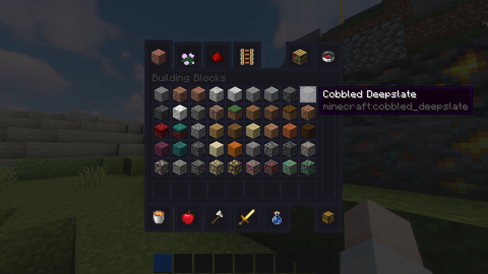
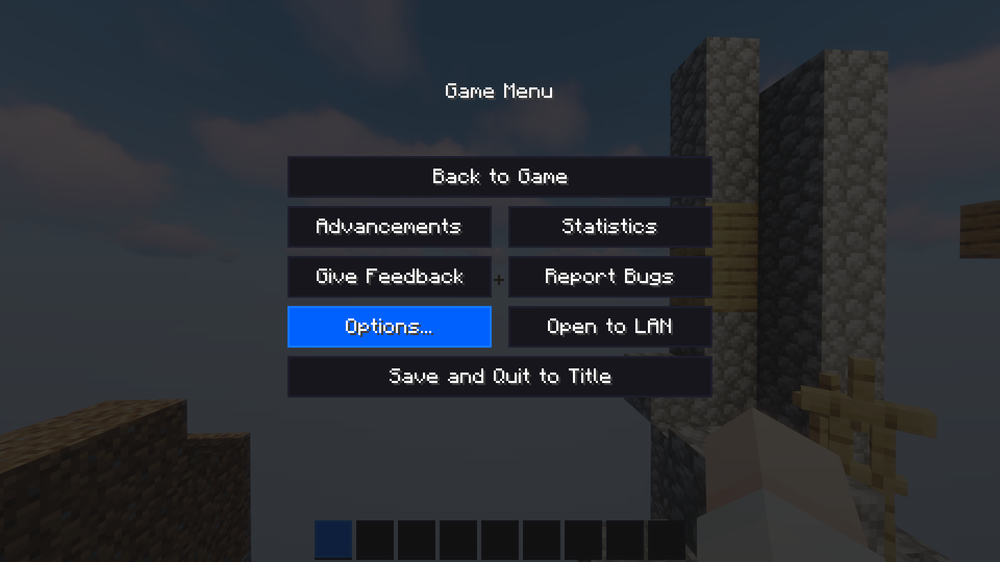
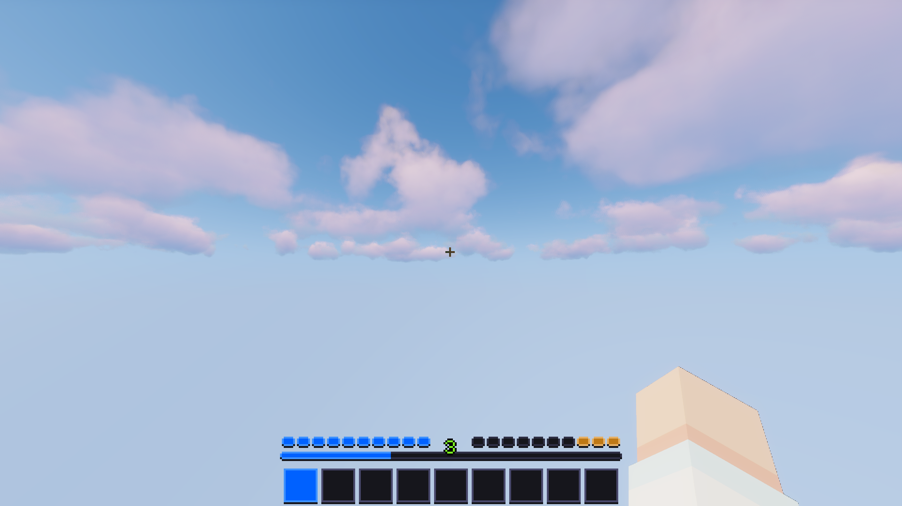
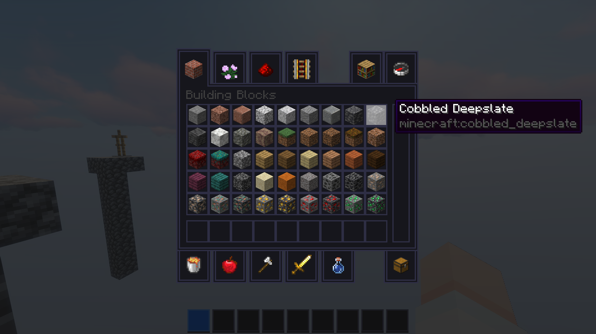
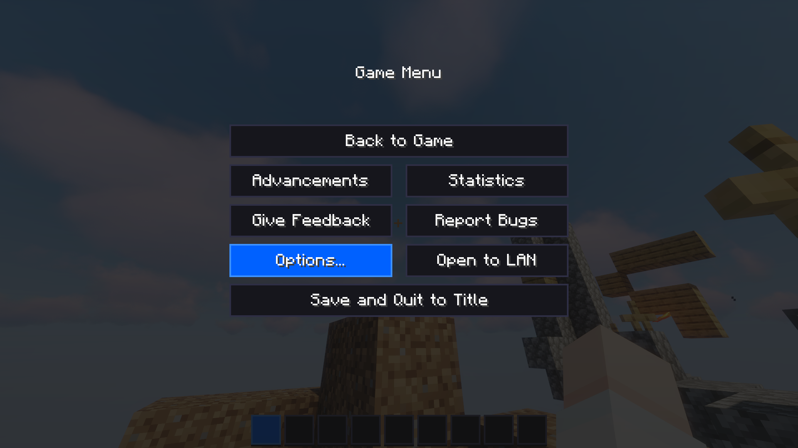

A sleek and modern dark-themed GUI resource pack for Minecraft.
Download latest Download Contrasted View on PMCThe Contrasted version of Simple Dark features more emphasised borders between backgrounds on buttons and windows.
Simple Dark is the successor to my previous dark-themed resource pack, Metro Dark Theme. This pack is built from the ground up with a sleek and modern design whilst keeping the dark aesthetic. Every GUI in the base game is themed along with most of the Realms GUIs making the experience seamless. There are also some additional fabric mods that have been themed with the pack, a full list detailed below.
Size
98.3KB, 92.5KB
Supports
1.16-1.17
Updated
11/06/2021
Released
09/03/2021
Survival hotbar, themed with the original Simple Dark
Creative menu, themed with the original Simple Dark
Options screen, themed with the original Simple Dark
Survival hotbar, themed with the contrasted Simple Dark
Creative menu, themed with the contrasted Simple Dark
Options screen, themed with the contrasted Simple Dark
A simple, but modern colour scheme is used throughout to remain consistent.
All native Minecraft, Minecraft Realms and additional fabric mod's interfaces have been fully themed with the same aesthetic.
The Fabric mods: SlotLock, Capes, ToroHealth Damage Indicators and ModMenu have been themed.
A seperate contrasted release of Simple Dark is available if you are struggling to identify where buttons and windows start and end.
As with any other resourcepack, there is an incredibly simple installation process:
Options... and then Resource Packs...Yes> arrow to enable the pack and hit Done